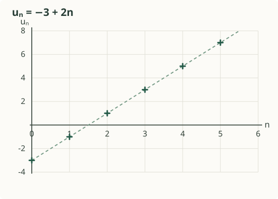
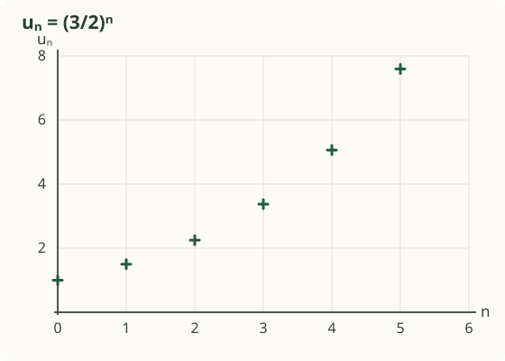
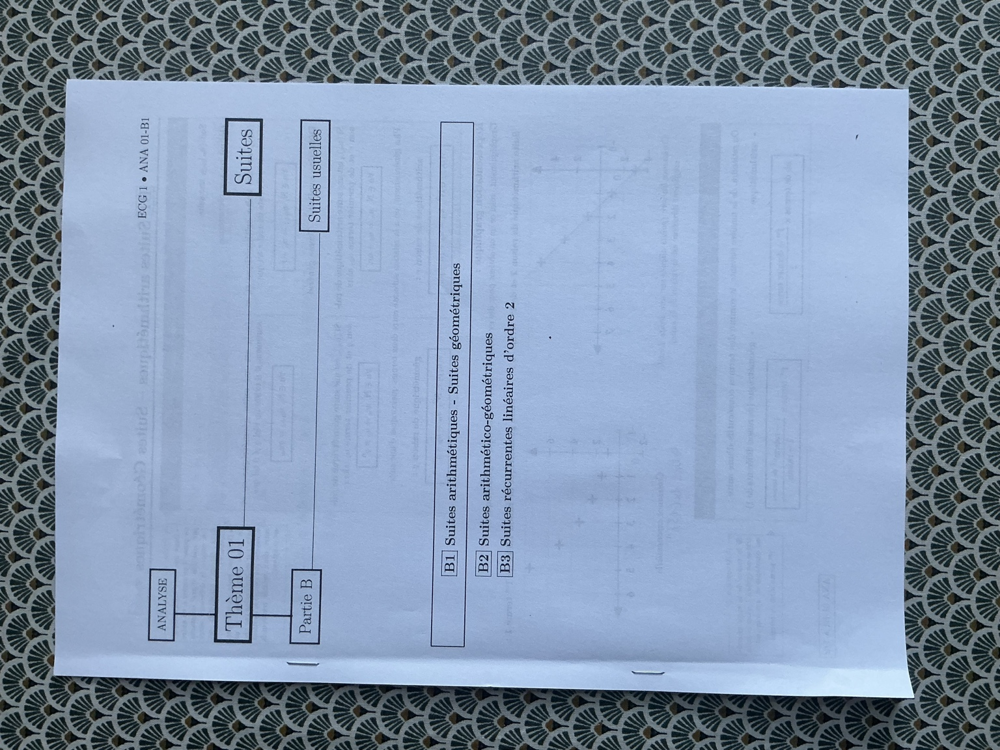
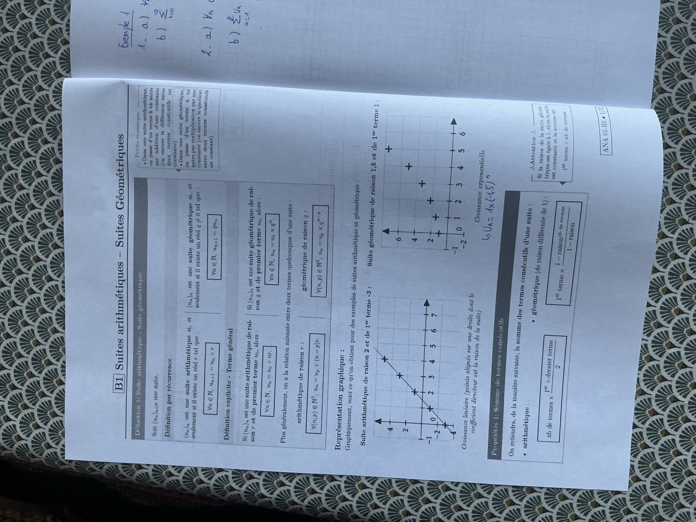
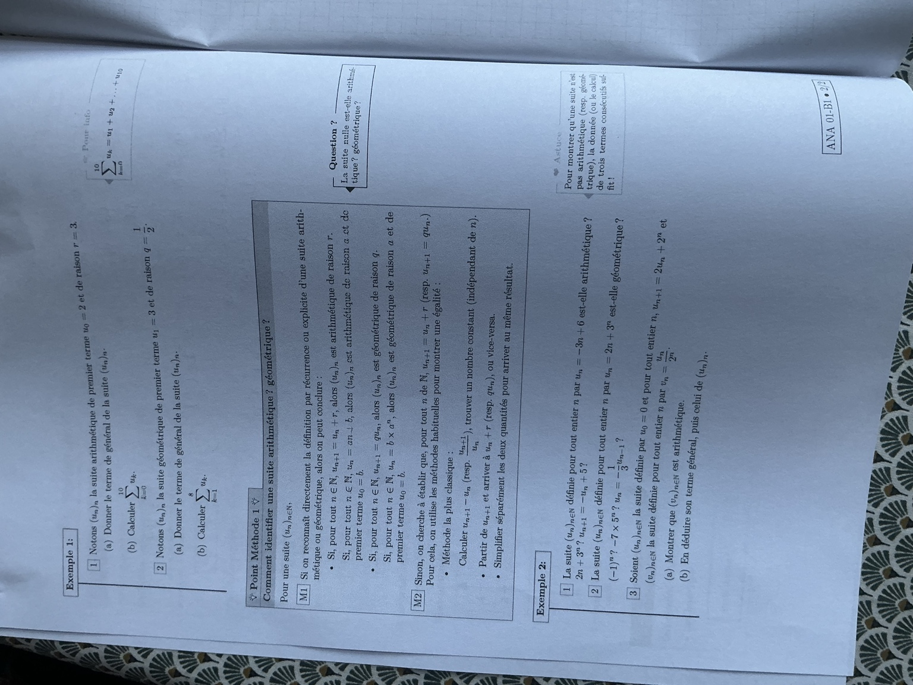
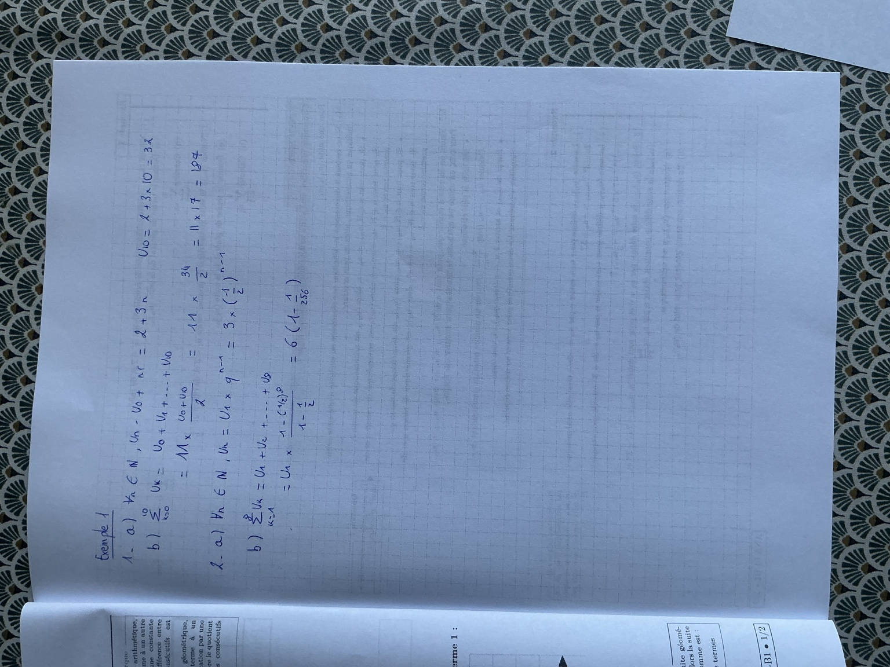

B1 · Suites arithmétiques et géométriques.
Reconnaître la nature d’une suite, trouver son terme général et additionner ses termes. Le cours de classe et tous ses exemples, détaillés avec des valeurs exactes et sans calculatrice.
1. Définition 1 — Deux suites usuelles
Une suite arithmétique se construit en ajoutant toujours le même nombre. Une suite géométrique se construit en multipliant toujours par le même nombre. Ce nombre constant est la raison.
| Repère | Suite arithmétique | Suite géométrique |
|---|---|---|
| Raison | Un réel \(r\) | Un réel \(q\ne0\), selon la convention du polycopié |
| Définition par récurrence | \(u_{n+1}=u_n+r\) | \(u_{n+1}=qu_n\) |
| Premier terme \(u_0\) | \(u_n=u_0+nr\) | \(u_n=u_0q^n\) |
| Premier terme \(u_1\) | \(u_n=u_1+(n-1)r\), pour \(n\ge1\) | \(u_n=u_1q^{n-1}\), pour \(n\ge1\) |
| À partir du rang \(p\) | \(u_n=u_p+(n-p)r\) | \(u_n=u_pq^{n-p}\) |
Les relations entre \(u_p\) et \(u_n\) valent pour tous les rangs \(p,n\) de la suite. La condition \(q\ne0\) permet aussi d’utiliser un exposant négatif si \(n<p\).
De \(u_p\) à \(u_n\), avec \(n\ge p\), il y a \(n-p\) passages. On ajoute \(r\) ou on multiplie par \(q\) exactement \(n-p\) fois. Depuis \(u_1\), le décalage est donc \(n-1\). Pour vérifier la formule, remplace \(n\) par le rang du premier terme.
- Arithmétique : la différence \(u_{n+1}-u_n\) est constante, égale à \(r\).
- Géométrique : lorsque \(u_n\ne0\), le quotient \(u_{n+1}/u_n\) est constant, égal à \(q\). Si un terme est nul, on utilise directement \(u_{n+1}=qu_n\), sans diviser.
2. Représentation graphique
Chaque terme donne un point \((n,u_n)\). Les deux exemples du polycopié sont reproduits ci-dessous ; les rangs sont des entiers.


| \(n\) | 0 | 1 | 2 | 3 | 4 | 5 |
|---|---|---|---|---|---|---|
| \(-3+2n\) | \(-3\) | \(-1\) | \(1\) | \(3\) | \(5\) | \(7\) |
| \((\frac32)^n\) | \(1\) | \(\frac32\) | \(\frac94\) | \(\frac{27}8\) | \(\frac{81}{16}\) | \(\frac{243}{32}\) |
Les deux suites représentées sont croissantes. Cela dépend des données : une suite arithmétique avec \(r<0\) décroît ; une suite géométrique de raison négative et de premier terme non nul alterne de signe.
3. Propriété 1 — Somme de termes consécutifs
Pour \(p\le n\), les rangs \(p,p+1,\ldots,n\) donnent \(N=n-p+1\) termes.
De 0 à 10 : \(10-0+1=11\) termes. De 1 à 8 : \(8-1+1=8\) termes. Le nombre de termes n’est pas le nombre de passages entre eux.
Nombre de termes × moyenne du premier et du dernier terme.
Pour calculer la somme, on commence donc souvent par trouver le dernier terme \(u_n\).
Premier terme de la somme × \((1-\text{raison}^{\text{nombre de termes}})/(1-\text{raison})\).
Le premier terme à utiliser est \(u_p\), celui où débute la somme. L’exposant est le nombre de termes.
Si \(q=1\), la suite est constante : \(\sum_{k=p}^{n}u_k=(n-p+1)u_p\). On ne divise jamais par \(1-q=0\).
Sur la page 2 du polycopié, la somme commence au rang 0, mais le développement imprimé omet \(u_0\). Il faut lire \(\sum_{k=0}^{10}u_k=u_0+u_1+\cdots+u_{10}\), ce qui donne bien 11 termes. La correction manuscrite tient compte de \(u_0\).
4. Exemple 1 — Terme général et sommes
1 — Suite arithmétique : u₀ = 2 et r = 3
Soit \((u_n)\) la suite arithmétique de premier terme \(u_0=2\) et de raison \(r=3\).
- Donner son terme général.
- Calculer \(\sum_{k=0}^{10}u_k\).
Correction — 11 termes et une somme égale à 187
(a) Trouver le terme général
La suite commence au rang 0. La formule \(u_n=u_0+nr\) donne :
Vérification : pour \(n=0\), on retrouve \(u_0=2\). Le dernier terme de la somme est \(u_{10}=2+3\times10=32\).
(b) Additionner les termes
Les rangs vont de 0 à 10, soit \(10-0+1=11\) termes. Le premier vaut 2 et le dernier 32 :
Sans calculatrice : \(11\times17=10\times17+17=170+17\). On retrouve le résultat de la page manuscrite.
2 — Suite géométrique : u₁ = 3 et q = 1/2
Soit \((u_n)_{n\ge1}\) la suite géométrique de premier terme \(u_1=3\) et de raison \(q=\frac12\).
- Donner son terme général.
- Calculer \(\sum_{k=1}^{8}u_k\).
Correction — le décalage n − 1 et une somme exacte
(a) Trouver le terme général
Le premier rang est 1. Pour aller de \(u_1\) à \(u_n\), on multiplie \(n-1\) fois par \(\frac12\) :
Pour \(n=1\), \(3(\frac12)^0=3\) : le premier terme est correct.
(b) Calculer la somme
De 1 à 8, il y a 8 termes. La raison vaut \(\frac12\ne1\), donc :
Calcul exact : \(2^8=256\), obtenu en doublant successivement \(2,4,8,16,32,64,128,256\). Diviser par \(\frac12\) revient à multiplier par 2. Puis on simplifie \(6/256=3/128\) et on calcule \(3\times255=765\).
La forme \(6(1-\frac1{256})\), présente sur la copie manuscrite, est déjà une réponse exacte correcte. La fraction ci-dessus la simplifie.
5. Point méthode 1 — Identifier une suite
M1 — Reconnaître une forme connue
- \(u_{n+1}=u_n+r\), avec \(r\) constant : suite arithmétique de raison \(r\).
- \(u_n=an+b\) : suite arithmétique de raison \(a\), de premier terme \(u_0=b\).
- \(u_{n+1}=qu_n\), avec \(q\ne0\) constant : suite géométrique de raison \(q\).
- \(u_n=b\times a^n\), avec \(a\ne0\) : suite géométrique de raison \(a\), de premier terme \(u_0=b\).
Dans \(an+b\), \(n\) est multiplié par \(a\). Dans \(b\times a^n\), \(n\) est un exposant : ces formes ont des natures différentes.
M2 — Démontrer une relation constante
- Pour une suite arithmétique, calculer \(u_{n+1}-u_n\). Le résultat doit être un nombre indépendant de \(n\).
- Pour une suite géométrique, montrer \(u_{n+1}=qu_n\). Si tous les termes sont non nuls, on peut calculer \(u_{n+1}/u_n\) : le résultat doit être une constante \(q\ne0\).
- Pour établir ces égalités, partir de \(u_{n+1}\) et faire apparaître \(u_n+r\) ou \(qu_n\) ; on peut aussi simplifier séparément les deux membres.
Si \(u_1-u_0\ne u_2-u_1\), la suite n’est pas arithmétique. Si les quotients sont définis et \(u_1/u_0\ne u_2/u_1\), elle n’est pas géométrique.
L’égalité des deux différences ou des deux quotients ne prouve pas la nature de toute la suite. Pour conclure positivement, il faut une relation valable pour tout rang. Par exemple, \(0,1,2,4,\ldots\) commence avec deux différences égales, puis la différence change.
Question du cours — Et la suite nulle ?
Si \(u_n=0\) pour tout \(n\), alors \(u_{n+1}=u_n+0\) : la suite est arithmétique de raison 0.
Elle vérifie aussi \(u_{n+1}=q u_n\) pour tout réel \(q\ne0\) : elle est donc également géométrique, avec une raison qui n’est pas unique. Le quotient \(0/0\) n’existe pas ; on utilise la définition multiplicative.
Plus généralement, une suite constante non nulle est arithmétique de raison 0 et géométrique de raison 1.
6. Exemple 2 — Tous les cas du polycopié
Chaque formule définit ici un cas indépendant. Avant d’ouvrir la correction, choisis M1 ou M2 et précise la nature que la question demande de tester.
1(a) — uₙ = −3n + 6 : arithmétique ?
La suite définie, pour tout \(n\in\mathbb N\), par \(u_n=-3n+6\) est-elle arithmétique ?
Correction — M1, puis vérification par M2
On reconnaît \(u_n=an+b\), avec \(a=-3\) et \(b=6\). La suite est donc arithmétique de raison \(-3\), de premier terme \(u_0=6\).
Pour le démontrer par une différence, on remplace tous les \(n\) par \(n+1\) :
Le résultat ne dépend pas du rang : c’est bien la raison.
1(b) — uₙ = 2n + 3ⁿ : arithmétique ?
La suite \(u_n=2n+3^n\) est-elle arithmétique ?
Correction — deux différences inégales
Calculons trois termes, en utilisant \(3^0=1\) :
Alors \(u_1-u_0=4\), tandis que \(u_2-u_1=8\). Les différences ne sont pas égales : la suite n’est pas arithmétique.
On peut aussi calculer au rang général :
Cette différence varie avec \(n\). La présence du terme \(2n\) ne suffit donc pas à rendre la somme arithmétique.
1(c) — uₙ₊₁ = −uₙ + 5 : arithmétique ?
Une suite vérifie \(u_{n+1}=-u_n+5\). Est-elle arithmétique ? Aucun premier terme n’est donné sur la feuille.
Correction — distinguer le cas constant
Observer la relation à deux rangs d’écart
La suite alterne donc entre \(u_0\) et \(5-u_0\). Les deux premières différences sont :
Elles sont égales si et seulement si \(5-2u_0=2u_0-5\), donc \(4u_0=10\), soit \(u_0=\frac52\).
Conclure selon le premier terme
- Si \(u_0=\frac52\), la relation donne \(u_1=\frac52\), puis tous les termes valent \(\frac52\). La suite est arithmétique de raison 0.
- Si \(u_0\ne\frac52\), les deux premières différences sont inégales : la suite n’est pas arithmétique.
La réponse dépend du premier terme : la suite est arithmétique si et seulement si \(u_0=\frac52\). Par exemple, avec \(u_0=0\), les termes \(0,5,0,5,\ldots\) ne forment pas une suite arithmétique.
2(a) — uₙ = 2n + 3ⁿ : géométrique ?
La suite \(u_n=2n+3^n\) est-elle géométrique ?
Correction — deux quotients inégaux
Les trois premiers termes sont \(u_0=1\), \(u_1=5\) et \(u_2=13\). Les deux premiers termes sont non nuls : les quotients suivants sont définis.
Or \(5=\frac{25}{5}\ne\frac{13}{5}\). La suite n’est pas géométrique. Aucune approximation décimale n’est nécessaire.
Autre présentation : si la raison était 5, imposée par les deux premiers termes, on aurait \(u_2=5u_1=25\). Mais \(u_2=13\) : contradiction.
2(b) — uₙ = (−1)ⁿ : géométrique ?
La suite \(u_n=(-1)^n\) est-elle géométrique ?
Correction — une raison négative
La forme \(u_n=1\times(-1)^n\) est celle d’une suite géométrique de premier terme \(u_0=1\) et de raison \(q=-1\).
Oui, la suite est géométrique de raison \(-1\). Ses termes sont \(1,-1,1,-1,\ldots\). Une suite peut être géométrique sans être monotone.
2(c) — uₙ = −7 × 5ⁿ : géométrique ?
La suite \(u_n=-7\times5^n\) est-elle géométrique ?
Correction — la raison est 5, le premier terme est −7
Dans la forme \(b\times a^n\), on lit \(b=-7\) et \(a=5\). Donc \(u_0=-7\) et la raison est \(q=5\).
Oui, la suite est géométrique de raison 5. Ses premiers termes sont \(-7,-35,-175\). Le facteur placé devant la puissance est le premier terme lorsque le rang initial est 0.
2(d) — uₙ = −(1/3)uₙ₋₁ : géométrique ?
Une suite vérifie \(u_n=-\frac13u_{n-1}\) pour \(n\ge1\). Est-elle géométrique ?
Correction — reconnaître la définition avec des indices décalés
Chaque terme s’obtient en multipliant le précédent par \(-\frac13\). On peut remplacer \(n\) par \(n+1\) et écrire :
Oui, la suite est géométrique de raison \(-\frac13\), et \(u_n=u_0(-\frac13)^n\). La donnée du premier terme est nécessaire pour connaître les valeurs, mais pas pour reconnaître ici la relation géométrique.
Si \(u_0=0\), on retrouve la suite nulle ; la relation reste vraie, et sa raison n’est alors pas unique.
3 — Transformer une suite : vₙ = uₙ / 2ⁿ
Soit \((u_n)\) définie par \(u_0=0\) et, pour tout \(n\in\mathbb N\), \(u_{n+1}=2u_n+2^n\). On définit \(v_n=\frac{u_n}{2^n}\).
- Montrer que \((v_n)\) est arithmétique.
- En déduire son terme général, puis celui de \((u_n)\).
Correction — une raison 1/2, puis le retour à uₙ
(a) Calculer vₙ₊₁ en remplaçant tous les indices
Le dénominateur \(2^n\) est strictement positif, donc \(v_n\) existe. Au rang suivant, on écrit \(v_{n+1}=u_{n+1}/2^{n+1}\). On remplace ensuite \(u_{n+1}\) par sa définition :
On a obtenu la définition d’une suite arithmétique : \((v_n)\) est arithmétique de raison \(\frac12\).
Le point clé est \(2^{n+1}=2\times2^n\). Il permet de simplifier les facteurs communs, sans calculatrice.
(b) Trouver vₙ, puis uₙ
Le premier terme est \(v_0=\frac{u_0}{2^0}=0\). La formule arithmétique donne :
On revient à la définition de \(v_n\) : \(v_n=u_n/2^n\), donc \(u_n=2^n v_n\).
Pour \(n=0\), la formule vaut bien 0 : \(0\times2^{-1}=0\). La forme \(\frac n2\,2^n\) permet aussi de vérifier ce rang directement.
Vérifier sur les premiers termes
| Rang | Relation de départ | Formule trouvée |
|---|---|---|
| 0 | \(u_0=0\) | \(0\) |
| 1 | \(u_1=2\times0+1=1\) | \(1\times2^0=1\) |
| 2 | \(u_2=2\times1+2=4\) | \(2\times2^1=4\) |
| 3 | \(u_3=2\times4+4=12\) | \(3\times2^2=12\) |
Ces calculs contrôlent la cohérence de la réponse. La démonstration générale repose sur la relation \(v_{n+1}=v_n+\frac12\).
Fiche express — Les réflexes de B1
| Objectif | Réflexe | Point à vérifier |
|---|---|---|
| Montrer qu’une suite est arithmétique | Calculer \(u_{n+1}-u_n\). | Une raison constante, pour tout rang. |
| Montrer qu’une suite est géométrique | Établir \(u_{n+1}=qu_n\). | Pour utiliser un quotient, le dénominateur doit être non nul. |
| Trouver le terme général | Partir de \(u_p\) et utiliser \(n-p\). | Retrouver le terme initial au bon rang. |
| Calculer une somme | Repérer le premier et le dernier rang ; compter \(n-p+1\) termes. | Arithmétique : moyenne des extrêmes. Géométrique : cas \(q=1\) séparé. |
| Écarter une nature | Chercher des différences ou des quotients incompatibles. | Quelques égalités numériques ne prouvent pas une nature pour tous les rangs. |
| Utiliser une suite auxiliaire | Écrire sa relation au rang \(n+1\), puis simplifier. | À la fin, revenir à la suite initialement demandée. |
Résultats à retrouver : \(\sum_{k=0}^{10}(2+3k)=187\) ; \(\sum_{k=1}^{8}3(\frac12)^{k-1}=\frac{765}{128}\) ; pour l’exemple 2.3, \(v_n=\frac n2\) et \(u_n=n2^{n-1}\).
A1 — Définitions et notations · A3 — Variations · TD ANA 01-A · Chapitre 6 — Suites usuelles
Les quatre photographies originales
Les fichiers sont conservés intégralement. Les photographies s’affichent à l’endroit et restent téléchargeables. La couverture situe B1 dans la partie B « Suites usuelles », qui annonce ensuite B2 « Suites arithmético-géométriques » et B3 « Suites récurrentes linéaires d’ordre 2 ».
Couverture — Thème 01, Partie B : Suites usuelles

Polycopié 1/2 — Définitions, graphiques et sommes

Polycopié 2/2 — Exemples 1 et 2, méthodes M1 et M2

Notes manuscrites — Correction de l’exemple 1
